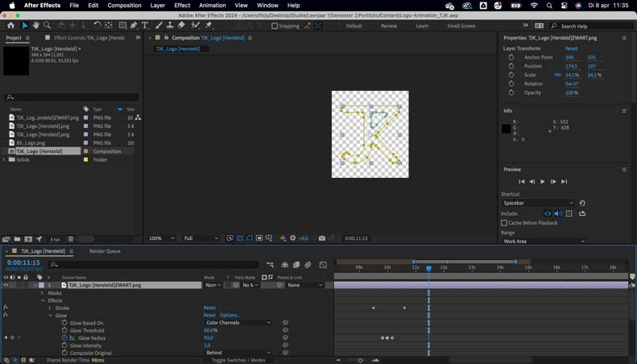
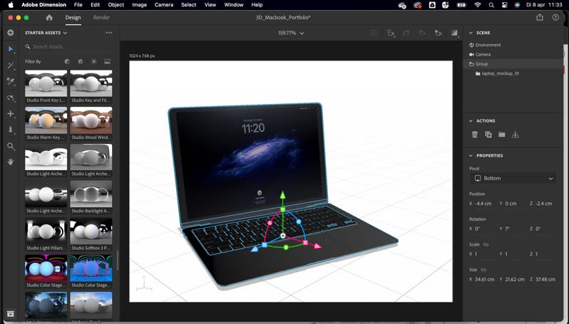
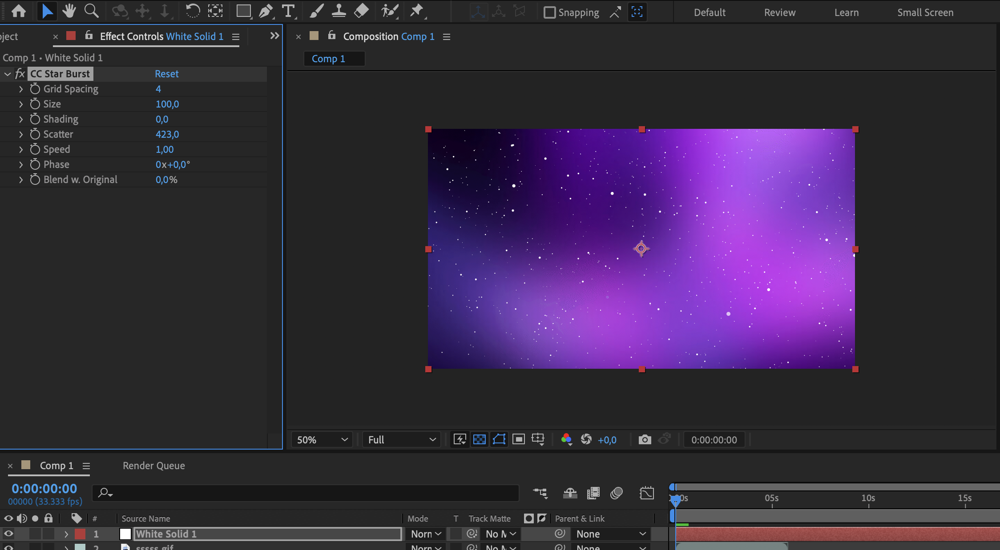
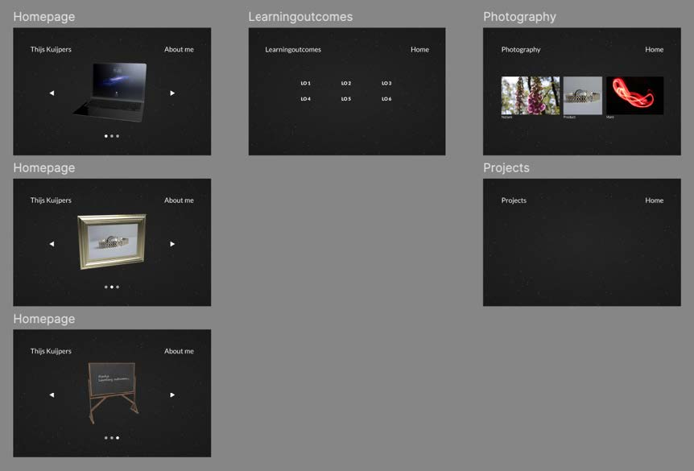
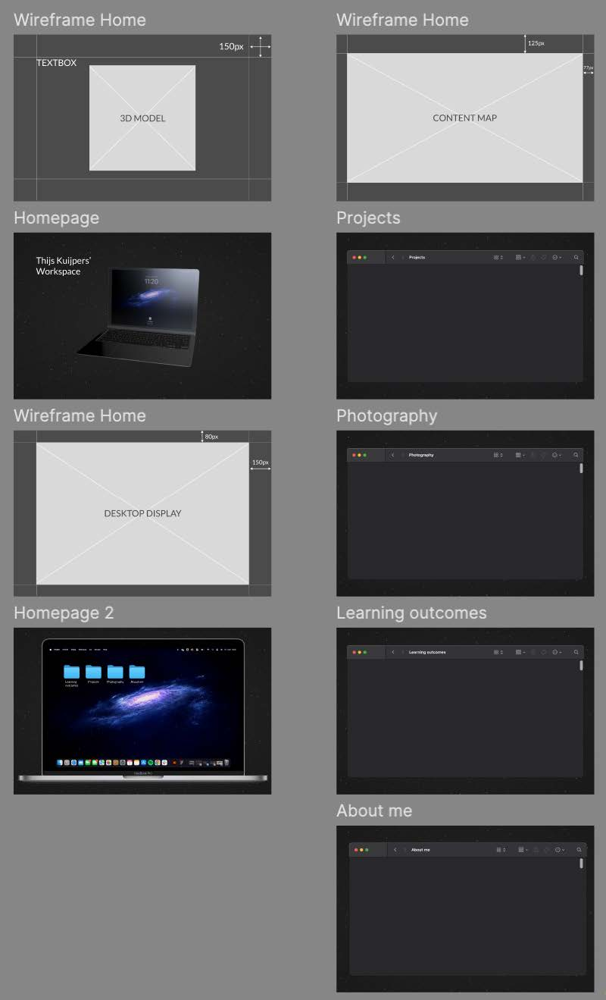
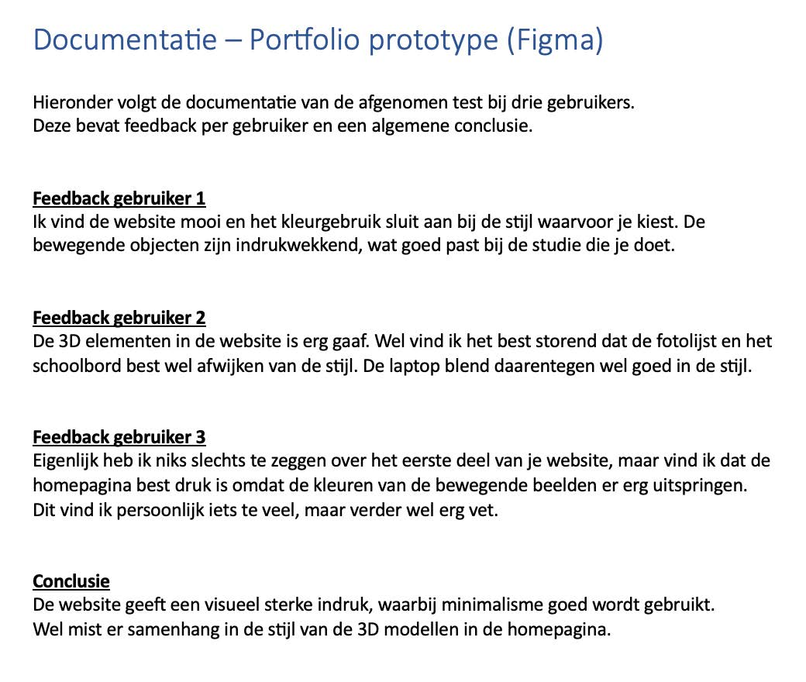

Portfolio website
Dit portfolio bevat al mijn werk van semester 2 inclusief uitleg. Op deze pagina vertel ik over het proces van mijn portfolio website, van begin tot eind.
Concept
Met mijn portfolio ontwerp neem ik de gebruiker mee in mijn werkplek. Ik heb een 3D model ontworpen van mijn eigen MacBook, waarop mijn werk gemaakt en opgeslagen wordt.
Ik hou van abstractie en wil laten zien dat er niet veel elementen en kleuren gebruikt hoeven worden om een strak en aantrekkelijk ontwerp te maken. Ook gebruik ik eentonige kleuren zodat het werk dat ik wil laten zien, altijd op de voorgrond staat.
Ik wil de gebruiker een kijkje in mijn ‘workspace’ laten nemen, door mijn laptop als 3D model in een ‘ruimte’ achtige omgeving te laten zweven. Deze woordspeling maakt het concept en de samenhang sterk terwijl het nog steeds een minimalistisch idee blijft.
Wanneer de gebruiker op de laptop klikt, wordt mijn laptop van dichterbij weergegeven waarbij de gebruiker mijn bureaublad ziet. De mappen waaruit gekozen kan worden op het bureaublad, zijn genoemd: Projects, Photography, Learning outcomes en About me. Deze mappen kan de gebruiker dus aanklikken om al mijn werk van ICT media semester 2 te bekijken.
Waarom de ruimte?
De ruimte is een goed voorbeeld van een plek waar minimalisme de hoofdrol speelt. De elementen in deze ‘minimalistische ruimte’ (Melkweg, sterren, etc.) zijn enorm indrukwekkend. Net als mijn content.
Ontwerpproces
Elementen in de website
De elementen/afeeldingen die in de website te zien zijn, bijvoorbeeld de laptop met het bureaublad, heb ik gemaakt met Adobe Photoshop en Adobe Illustrator. Deze zijn dus allemaal zelfgemaakt. Ook deze zijn zowel terug te zien in het Figma ontwerp als de uitgewerkte versie van mijn portfolio website.

GIF ontwerp
Ik heb twee GIFs gemaakt die ik gebruik in mijn website; een GIF die mijn persoonlijke logo in uitlijnen vertoond, en een GIF die als achtergrond dient. Deze GIFs heb ik gemaakt met Adobe After Effects.

3D model
Om mijn concept te realiseren, wilde ik graag gebruik maken van een 3D model in mijn portfolio website. Ik heb een 3D model van mijn MacBook ontworpen in Adobe Dimensions. Deze bevind zich op de homepagina van mijn website.
Het 3D model draait naar de muis toe. Door deze speelse feature krijgt de gebruiker een realistischer gevoel tijdens het bezoeken van mijn werkplek.

Website achtergrond
Voor het maken van de achtergrond van mijn portfolio website heb ik After Effects gebruikt. Het is een MP4 bestand die zich op de achtergrond als loop afspeelt.
Figma prototype

Het prototype voor mijn website, heb ik ontworpen in Figma. In de prototypes is doorklikken naar volgende pagina's ook mogelijk, alleen is het nog niet gevuld met content.
Ik werk in Figma van boven naar onder. In mijn iteratieve proces is te zien dat ik voor ieder nieuw ontwerp een wireframe maak. Inspiratie heb ik gehaald uit de bronnen: awwwards.com en threejs.org. Vooral de 3D modellen spraken mij aan in deze voorbeelden, omdat deze op veel unieke manieren kunnen worden toegepast binnen een website.
Prototype testen
Ik heb een eerder ontwerp in Figma, als prototype getest bij drie personen. Ik heb de persoon de homepagina laten zien, waarna hij/zij door mocht klikken naar de volgende pagina’s. Hierbij heb ik feedback ontvangen en verwerkt om de website te verbeteren.

Ontwerp vóór de test
Conclusie (reflectie): Hieronder is de conclusie na de feedback van de testers weergegeven, deze komt uit mijn documentatie van de test.
‘’De website geeft een visueel sterke indruk, waarbij minimalisme goed wordt gebruikt. Wel mist er samenhang in de stijl van de 3D modellen in de homepagina.’’

Ontwerp na de test
Hieronder is het definitieve ontwerp van mijn portfolio website weergegeven.
Naar aanleiding van de feedback, heb ik ervoor gekozen om twee 3D modellen (fotolijst en schoolbord) weg te laten, om de samenhang van de stijl te bevorderen. Ook past dit beter bij mijn concept, waarbij de gebruiker zich bevindt in mijn werkplek.
Deze usertest heeft ervoor gezorgd dat zowel het concept als de visuele uiting van mijn website verbeterd is.

Documentatie
Hier is mijn beknopte documentatie van de usertest weergegeven.
Portfolio development
Ik heb mijn portfolio ontwerp, uitgewerkt tot een website. Ik heb hiervoor gebruik gemaakt van Visual Studio Code, en de codeertalen: HTML, CSS en Javascript.
Aan het begin van semester twee, had ik net de basis van HTML en CSS onder de knie. Met dank aan de workshops van Fontys, heb ik mijn vaardigheden verbeterd. Zowel het gebruik van CSS grid en flexbox als het gebruik van Javascript, heb ik geleerd tijdens deze workshops. Ook heb ik veel tutorials gevolgd op Youtube, om mijn kennis te verbreden.
Je bevind je nu in het eindproduct; mijn portfolio.